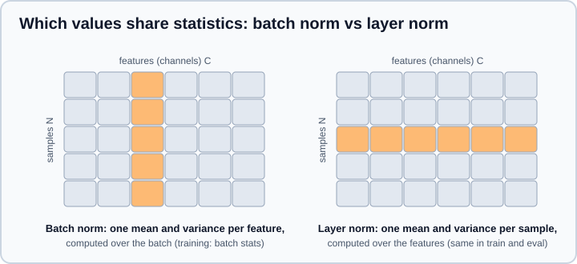

Training Deep Networks: Initialization, Normalization & Regularization
|
This content was generated with the assistance of AI and should be verified against the official documentation before being relied on in production. |
A network that is correct on paper can still fail to train: activations shrink to zero or explode before the loss is even computed, gradients vanish in the early layers, the learning rate that worked for one batch size diverges for another, or the training loss falls while validation loss rises. A small set of techniques solves most of these problems, and they appear in almost every modern architecture: careful initialization of the weights, normalization layers, regularization (dropout, weight decay, early stopping, label smoothing), residual connections, gradient clipping and disciplined checkpointing. This page explains each, shows when it helps and when it hurts, and gives complete PyTorch and Keras code.
Examples target Python 3.13, PyTorch 2.15 and TensorFlow 2.21 with Keras 3.15. The facts were checked on 2026-10-30. Examples were run on Python 3.13 with NumPy 2, PyTorch 2.15 (CPU) and Keras 3.15 on TensorFlow 2.21 on 2026-11-01, and the outputs shown are from that run. This page assumes the network and activation vocabulary of Neural Network Fundamentals and the gradient machinery of Backpropagation & Automatic Differentiation. The general theory of overfitting and regularization is in Generalization, Bias-Variance & Regularization, optimizers and schedules are in Optimizers & Learning-Rate Schedules, and a systematic approach to hyperparameters is in Tuning Deep Networks in Practice.
Weight initialization
Training starts from random weights, and the scale of that randomness decides whether signals survive a deep stack of layers. Consider one linear layer with \(n_\text{in}\) inputs of variance \(\sigma_x^2\) and independent weights of variance \(\sigma_w^2\). The output variance is \(n_\text{in}\,\sigma_w2\,\sigma_x2\). Unless \(n_\text{in}\sigma_w^2\) is near 1, the variance is multiplied by that factor at every layer, so after \(L\) layers it has changed by its \(L\)-th power: it vanishes if the factor is below 1 and explodes if it is above. The backward pass has the same problem, with \(n_\text{out}\) in place of \(n_\text{in}\).
Two simpler choices fail immediately:
-
All zeros (or any constant). Every unit in a layer computes the same output and receives the same gradient, so they stay identical forever: the symmetry is never broken. Zero is fine for biases, never for weights.
-
Small random numbers, such as a normal with standard deviation 0.01. This is fine for a two-layer network and fatal for a deep one: the signal shrinks geometrically.
The standard schemes choose \(\sigma_w^2\) to keep the variance roughly constant:
| Scheme | Weight variance | Use with |
|---|---|---|
Xavier / Glorot (2010) |
\(\dfrac{2}{n_\text{in} + n_\text{out}}\), normal or uniform |
Tanh, sigmoid, linear and softmax layers; the Keras default ( |
He / Kaiming (2015) |
\(\dfrac{2}{n_\text{in}}\) |
ReLU and its variants. The factor 2 compensates for ReLU zeroing half of the activations. |
LeCun |
\(\dfrac{1}{n_\text{in}}\) |
SELU and as a compromise for smooth activations |
Orthogonal |
Orthogonal matrix, scaled by a gain |
Recurrent weight matrices and very deep plain networks |
The next experiment pushes unit-variance inputs through 20 random layers of width 256 and reports the standard deviation of the final activations. Only the He scheme keeps ReLU activations at a healthy scale; the others vanish or explode by many orders of magnitude.
import numpy as np
rng = np.random.default_rng(0)
x0 = rng.normal(size=(1000, 256)) # unit-variance inputs
schemes = {
"small (0.01)": lambda fan_in, fan_out: 0.01,
"large (1.0)": lambda fan_in, fan_out: 1.0,
"Xavier": lambda fan_in, fan_out: np.sqrt(2.0 / (fan_in + fan_out)),
"He": lambda fan_in, fan_out: np.sqrt(2.0 / fan_in),
}
relu = lambda z: np.maximum(z, 0.0)
def final_std(scheme, act, depth=20, width=256):
h = x0
for _ in range(depth):
W = rng.normal(size=(h.shape[1], width)) * scheme(h.shape[1], width)
h = act(h @ W)
return h.std()
for name, scheme in schemes.items():
print(f"{name:13s} ReLU: {final_std(scheme, relu):9.3g} tanh: {final_std(scheme, np.tanh):9.3g}")Output (values from one run; they change with the seed but not in order of magnitude):
small (0.01) ReLU: 1.03e-19 tanh: 1.21e-16 large (1.0) ReLU: 8.09e+20 tanh: 0.974 Xavier ReLU: 0.000767 tanh: 0.159 He ReLU: 0.746 tanh: 0.555
Source: Dive into Deep Learning: Numerical stability and initialization and Stanford CS231n: Weight initialization, which runs a similar depth experiment.
With a weight scale of 1.0 the tanh activations do not explode, but they saturate at plus or minus 1, where the gradient is nearly zero, which is another way of failing.
Defaults and how to set them
You rarely need to initialize by hand, because the layers have sensible defaults, but those defaults differ between frameworks and are not always the best for ReLU networks:
| PyTorch | Keras 3 | |
|---|---|---|
|
Kaiming-uniform with a gain chosen so the weights are uniform in \([-1/\sqrt{n_\text{in}},\ 1/\sqrt{n_\text{in}}]\); bias uniform in the same range |
|
Embeddings |
Standard normal |
|
Change it |
|
|
import torch
from torch import nn
def init_weights(module):
if isinstance(module, nn.Linear):
nn.init.kaiming_normal_(module.weight, nonlinearity="relu")
nn.init.zeros_(module.bias)
model = nn.Sequential(nn.Linear(20, 64), nn.ReLU(), nn.Linear(64, 3))
model.apply(init_weights) # recursively visits every submodule
print(model[0].weight.std().item(), (2 / 20) ** 0.5) # about 0.316 bothimport keras
from keras import layers
model = keras.Sequential(
[
keras.Input(shape=(20,)),
layers.Dense(64, activation="relu", kernel_initializer="he_normal"),
layers.Dense(3),
]
)Practical rules: use He initialization with ReLU-family activations, Xavier with tanh or sigmoid, keep biases at zero, and in a residual block initialize the last normalization scale or last convolution to zero so the block starts as the identity (see below). Normalization layers make a network much less sensitive to initialization, which is one of their main practical benefits.
Normalization layers
Even with good initialization, the distribution of a layer’s inputs shifts as earlier layers learn, and large or badly centred activations force a small learning rate. Normalization layers re-center and re-scale activations during the forward pass, then let the network undo the change through a learned scale \(\gamma\) and shift \(\beta\):
\[ \hat{x} = \frac{x - \mu}{\sqrt{\sigma^2 + \epsilon}}, \qquad y = \gamma\,\hat{x} + \beta \]
The layers differ only in which values share a mean \(\mu\) and variance \(\sigma^2\).

| Layer | Statistics over | Train and eval behaviour | Typical use |
|---|---|---|---|
Batch norm (Ioffe and Szegedy, 2015) |
The batch (and spatial positions) for each channel |
Training uses batch statistics and updates running averages; evaluation uses the running averages |
Convolutional networks and MLPs with reasonably large batches |
Layer norm (Ba et al., 2016) |
All features of one sample |
Identical in both modes; no batch dependence |
Transformers, recurrent networks, small batches |
RMSNorm (Zhang and Sennrich, 2019) |
Like layer norm but scales by the root mean square only (no mean subtraction, usually no bias) |
Identical in both modes |
Recent large language models; cheaper than layer norm |
Group norm (Wu and He, 2018) |
Groups of channels within one sample |
Identical in both modes |
Convolutional networks with tiny batches (detection, segmentation, video) |
Instance norm |
Each channel of each sample |
Identical in both modes |
Style transfer and some image generators |
Batch normalization in depth
Batch normalization (BN) computes \(\mu\) and \(\sigma^2\) from the current mini-batch while training, which also adds a little noise that regularizes. At inference there is no batch to rely on (a single example has no meaningful batch statistics), so BN uses exponential moving averages of the mean and variance collected during training. The consequences are the most common sources of BN bugs:
-
Train and eval modes differ. Forgetting
model.eval()in PyTorch gives noisy, batch-dependent predictions and silently updates the running statistics with test data. In Keras, passtraining=False(predictandevaluatedo this) or call the model normally outsidefit. -
Small or non-representative batches give noisy statistics and a gap between training and evaluation behaviour. Below roughly 8 to 16 examples per device, prefer group or layer norm. Under data parallelism each device normalizes its own shard unless you convert to a synchronized layer (
torch.nn.SyncBatchNorm); see Distributed Training Concepts. -
The momentum arguments are opposite conventions. PyTorch
momentum=0.1is the weight of the new batch statistic; Kerasmomentum=0.99is the weight of the old running value. The same numeric value means very different things. The epsilon defaults also differ (1e-5 in PyTorch, 1e-3 in Keras). -
The layer before BN does not need a bias, since BN subtracts the mean. Use
bias=False(PyTorch) oruse_bias=False(Keras) to save parameters. -
Fine-tuning with frozen BN. When you freeze a pretrained backbone, keep its BN layers in inference mode, otherwise the first batches of new data overwrite the pretrained statistics. In Keras, setting
layer.trainable = Falseon aBatchNormalizationlayer also makes it run in inference mode; in PyTorch call.eval()on the BN modules explicitly (a latermodel.train()switches them back). -
The placement used by the original paper and by most implementations is linear or convolution, then BN, then the activation; putting BN after the activation also works. Be consistent with the architecture you copy.
Layer, RMS and group normalization
Layer norm normalizes each sample independently, so it behaves the same in training and evaluation, for any batch size and any sequence length. That is why transformers use it. Transformers also differ in where the normalization sits: the original design normalizes after the residual addition (post-norm), while most modern models normalize at the input of each sub-layer (pre-norm), which trains more stably at depth without a long learning-rate warm-up. RMSNorm drops the mean subtraction, which is cheaper and works as well in practice; torch.nn.RMSNorm exists in PyTorch since 2.4, and Keras 3 has keras.layers.RMSNormalization. The attention and transformer blocks themselves are in Attention & Transformers.
Normalization in code
import torch
from torch import nn
torch.manual_seed(0)
x = torch.randn(32, 64) * 3 + 5 # a batch with mean 5 and std 3
bn = nn.BatchNorm1d(64) # momentum=0.1 means: new = 0.9 * old + 0.1 * batch
ln = nn.LayerNorm(64)
gn = nn.GroupNorm(num_groups=8, num_channels=64)
rms = nn.RMSNorm(64)
bn.train()
y = bn(x)
print("batch norm, train: per-feature mean", y.mean(dim=0).abs().max().item() < 1e-5)
print("running mean moved only a little :", bn.running_mean[:2])
bn.eval()
y_eval = bn(x) # uses running statistics, not batch statistics
print("batch norm, eval : per-feature mean", y_eval.mean(dim=0).abs().max().item() < 1e-5)
print("layer norm: per-sample mean", ln(x).mean(dim=1).abs().max().item() < 1e-5)Output (the running mean values depend on the seed):
batch norm, train: per-feature mean True running mean moved only a little : tensor([0.4290, 0.4812]) batch norm, eval : per-feature mean False layer norm: per-sample mean True
The False for batch norm in eval mode shows the point: the first training step has moved the running mean only 10 percent of the way toward 5, so evaluation output is far from normalized until the averages converge. In real training the running averages converge long before you evaluate.
import keras
from keras import layers
model = keras.Sequential(
[
keras.Input(shape=(20,)),
layers.Dense(128, use_bias=False, kernel_initializer="he_normal"),
layers.BatchNormalization(momentum=0.99), # momentum is the weight of the OLD average
layers.Activation("relu"),
layers.Dense(128, use_bias=False, kernel_initializer="he_normal"),
layers.LayerNormalization(), # alternative that ignores the batch
layers.Activation("relu"),
layers.Dense(3),
]
)Regularization
Regularization reduces the gap between training and validation performance by constraining or perturbing the model. Combine several mild techniques instead of relying on one strong one.
Weight decay and L2 regularization
L2 regularization adds \(\tfrac{\lambda}{2}\lVert\mathbf{w}\rVert^2\) to the loss, which pulls weights toward zero and prefers smoother functions. Weight decay shrinks the weights by a factor at every update. For plain SGD the two are equivalent. For adaptive optimizers such as Adam they are not: an L2 term added to the loss is rescaled by the adaptive step, so large-gradient weights are regularized less. AdamW (Loshchilov and Hutter) decouples the decay from the gradient and is the default choice for transformers and most new work. In PyTorch torch.optim.SGD(..., weight_decay=...) applies L2 to the gradient, while torch.optim.AdamW(..., weight_decay=...) is decoupled (default 0.01); in Keras use weight_decay= on keras.optimizers.AdamW (or any optimizer), or a kernel_regularizer to add a penalty to the loss. By convention, do not decay biases or normalization parameters; PyTorch lets you pass parameter groups with different weight_decay values. More on the optimizers in Optimizers & Learning-Rate Schedules.
Dropout
Dropout (Srivastava et al., 2014) zeroes each activation independently with probability \(p\) during training, which prevents units from co-adapting and acts like averaging many thinned networks. PyTorch and Keras both use inverted dropout: the surviving activations are scaled by \(1/(1-p)\) during training so that inference needs no change. Dropout is disabled in evaluation mode.
import torch
from torch import nn
drop = nn.Dropout(p=0.5)
x = torch.ones(10000)
drop.train()
out = drop(x)
print(out.unique(), out.mean().item()) # tensor([0., 2.]) and a mean close to 1
drop.eval()
print(drop(x).unique()) # tensor([1.])Guidance: dropout rates of 0.1 to 0.5 on wide fully connected layers help when data is limited; it is used less in convolutional layers (spatial structure makes element-wise dropout weak, and BN already regularizes) and sparingly in transformers (0.1 on attention and feed-forward outputs). Dropout and BN together can disagree: dropout changes the variance that BN sees between training and evaluation, so place dropout after the BN and activation or reduce the rate. Both frameworks name the argument by the probability of dropping (p in PyTorch, rate in Keras). The TensorFlow 1 function tf.nn.dropout(x, keep_prob) used the probability of keeping, so converting old code needs rate = 1 - keep_prob.
Early stopping
Monitor the validation loss; stop when it has not improved for a patience of several epochs and restore the weights of the best epoch. It costs nothing, acts as a regularizer by limiting how far the weights travel from their initialization, and saves compute. Its limits: with noisy validation curves use a larger patience, remember that validation data used for stopping is no longer a clean estimate (keep a separate test set), and with a learning-rate schedule the loss often plateaus before dropping again after a decay step.
Data augmentation, label smoothing and others
-
Data augmentation (random crops, flips, color jitter, mixup, CutMix, noise, time warping, SpecAugment) is usually the most effective regularizer for images, audio and text-adjacent tasks because it adds invariances the model would otherwise have to learn from data. Apply it to the training set only.
-
Label smoothing replaces the one-hot target with \(1-\varepsilon\) on the correct class and \(\varepsilon/(K-1)\) spread over the others (PyTorch:
nn.CrossEntropyLoss(label_smoothing=0.1); Keras:CategoricalCrossentropy(label_smoothing=0.1)). It discourages over-confident logits and often improves calibration. It makes the predicted probabilities less sharp, so apply it with care if you need calibrated probabilities afterwards. -
Stochastic depth randomly skips residual blocks during training; weight averaging (EMA or SWA) keeps a running average of the weights; ensembling averages several models. Each adds cost or complexity and is worth trying after the basics.
-
Reduce capacity. Fewer layers or units is the oldest regularizer and still works.
A complete training loop with regularization
The loop below combines He initialization, batch normalization, dropout, decoupled weight decay, label smoothing, gradient clipping, early stopping and checkpointing on a synthetic classification task. It switches between training and evaluation mode explicitly and disables gradient tracking during validation.
import copy
import torch
from torch import nn
from torch.utils.data import DataLoader, TensorDataset, random_split
torch.manual_seed(0)
device = torch.accelerator.current_accelerator() if torch.accelerator.is_available() else torch.device("cpu")
# synthetic 3-class problem
X = torch.randn(2000, 20)
y = (X @ torch.randn(20, 3) + 0.5 * torch.randn(2000, 3)).argmax(dim=1)
train_set, val_set = random_split(
TensorDataset(X, y), [1500, 500], generator=torch.Generator().manual_seed(0)
)
train_loader = DataLoader(train_set, batch_size=64, shuffle=True)
val_loader = DataLoader(val_set, batch_size=256)
def init_weights(module):
if isinstance(module, nn.Linear):
nn.init.kaiming_normal_(module.weight, nonlinearity="relu")
nn.init.zeros_(module.bias)
model = nn.Sequential(
nn.Linear(20, 128), nn.BatchNorm1d(128), nn.ReLU(), nn.Dropout(0.3),
nn.Linear(128, 128), nn.BatchNorm1d(128), nn.ReLU(), nn.Dropout(0.3),
nn.Linear(128, 3),
).to(device)
model.apply(init_weights)
optimizer = torch.optim.AdamW(model.parameters(), lr=1e-3, weight_decay=1e-2)
loss_fn = nn.CrossEntropyLoss(label_smoothing=0.05)
def run_epoch(loader, train):
model.train(train) # train(False) is the same as model.eval()
total_loss, correct, n = 0.0, 0, 0
with torch.set_grad_enabled(train): # no graph is built during validation
for xb, yb in loader:
xb, yb = xb.to(device), yb.to(device)
logits = model(xb)
loss = loss_fn(logits, yb)
if train:
optimizer.zero_grad()
loss.backward()
nn.utils.clip_grad_norm_(model.parameters(), max_norm=1.0)
optimizer.step()
total_loss += loss.item() * len(xb)
correct += (logits.argmax(dim=1) == yb).sum().item()
n += len(xb)
return total_loss / n, correct / n
best_val, best_state, patience, bad_epochs = float("inf"), None, 5, 0
for epoch in range(100):
train_loss, train_acc = run_epoch(train_loader, train=True)
val_loss, val_acc = run_epoch(val_loader, train=False)
if val_loss < best_val - 1e-4:
best_val, bad_epochs = val_loss, 0
best_state = copy.deepcopy(model.state_dict())
else:
bad_epochs += 1
if bad_epochs >= patience:
print(f"early stop at epoch {epoch}")
break
if epoch % 5 == 0:
print(f"epoch {epoch:2d} train {train_loss:.3f}/{train_acc:.3f} val {val_loss:.3f}/{val_acc:.3f}")
model.load_state_dict(best_state)
torch.save({"model": best_state, "val_loss": best_val}, "checkpoint.pt")Output (abridged to every tenth epoch):
epoch 0 train 1.117/0.479 val 0.755/0.746 epoch 10 train 0.488/0.843 val 0.425/0.902 epoch 20 train 0.426/0.886 val 0.402/0.908 epoch 30 train 0.396/0.902 val 0.388/0.908 epoch 40 train 0.366/0.929 val 0.382/0.904 early stop at epoch 41
Training loss is higher than validation loss in the first epochs because dropout is active during training and off during validation, and the training metric is averaged over an epoch while the weights are still improving. That is expected and not a bug.
The Keras equivalent expresses the same ideas through arguments and callbacks. global_clipnorm clips the combined norm of all gradients, whereas clipnorm clips each variable’s gradient separately.
import numpy as np
import keras
from keras import layers
keras.utils.set_random_seed(0)
X = np.random.randn(2000, 20).astype("float32")
y = (X @ np.random.randn(20, 3)).argmax(axis=1)
model = keras.Sequential(
[
keras.Input(shape=(20,)),
layers.Dense(128, use_bias=False, kernel_initializer="he_normal",
kernel_regularizer=keras.regularizers.L2(1e-4)),
layers.BatchNormalization(),
layers.Activation("relu"),
layers.Dropout(0.3),
layers.Dense(128, use_bias=False, kernel_initializer="he_normal"),
layers.BatchNormalization(),
layers.Activation("relu"),
layers.Dropout(0.3),
layers.Dense(3),
]
)
model.compile(
optimizer=keras.optimizers.AdamW(learning_rate=1e-3, weight_decay=1e-2, global_clipnorm=1.0),
loss=keras.losses.SparseCategoricalCrossentropy(from_logits=True),
metrics=["accuracy"],
)
callbacks = [
keras.callbacks.EarlyStopping(monitor="val_loss", patience=5, restore_best_weights=True),
keras.callbacks.ModelCheckpoint("best.keras", monitor="val_loss", save_best_only=True),
]
history = model.fit(X, y, validation_split=0.25, epochs=100, batch_size=64,
callbacks=callbacks, verbose=2)Source: PyTorch: Dropout, AdamW, Keras: EarlyStopping and Keras: Dropout
Residual connections
A residual block outputs \(\mathbf{y} = \mathbf{x} + F(\mathbf{x})\), where \(F\) is a few layers. The identity path gives gradients a direct route to earlier layers (a derivative of 1 plus the derivative of \(F\)), which is why ResNets (He et al., 2015) trained at 152 layers when plain networks of 30 layers got worse, and why every transformer wraps its sub-layers in residual connections. If \(F\) is initialized to produce zeros, the block starts as the identity and cannot hurt the signal. Setting the scale of the last normalization layer in the block to zero does exactly that.
import torch
from torch import nn
class ResidualBlock(nn.Module):
def __init__(self, channels: int):
super().__init__()
self.fc1 = nn.Linear(channels, channels)
self.bn1 = nn.BatchNorm1d(channels)
self.fc2 = nn.Linear(channels, channels)
self.bn2 = nn.BatchNorm1d(channels)
nn.init.zeros_(self.bn2.weight) # block starts as the identity
def forward(self, x):
out = torch.relu(self.bn1(self.fc1(x)))
out = self.bn2(self.fc2(out))
return torch.relu(x + out) # skip connection
block = ResidualBlock(16)
x = torch.randn(8, 16)
print(torch.allclose(block(x), torch.relu(x))) # True: identity at initializationThe same idea underlies the convolutional blocks of Convolutional Neural Networks. Torchvision’s ResNet constructors expose it as zero_init_residual.
Gradient clipping
Exploding gradients (very large updates, a loss that jumps to nan) are common in recurrent networks, transformers at high learning rates and the first steps of mixed-precision training. Clipping caps the update. Clipping by global norm rescales all gradients together if their combined norm exceeds a threshold, preserving direction; clipping by value clamps each element and distorts the direction. Use the global norm, with thresholds around 0.5 to 1.0 for transformers, and call it after backward() and before optimizer.step(). If gradients were scaled by a loss scaler in mixed precision, unscale them first (see Hardware, Memory & Mixed Precision). Clipping hides a problem rather than solving it; if you clip on every step, lower the learning rate or look for the cause.
import torch
from torch import nn
model = nn.Linear(10, 2)
loss = model(torch.randn(4, 10)).pow(2).sum() * 1000
loss.backward()
total_norm = nn.utils.clip_grad_norm_(model.parameters(), max_norm=1.0) # returns the norm before clipping
clipped = torch.sqrt(sum(p.grad.pow(2).sum() for p in model.parameters()))
print(total_norm.item() > 1.0, round(clipped.item(), 3)) # True 1.0In Keras pass global_clipnorm= to the optimizer (as above); in a custom TensorFlow loop use tf.clip_by_global_norm.
Source: torch.nn.utils.clip_grad_norm_
Checkpoints and saving
Training runs fail, machines are preempted and the best epoch is rarely the last. Save checkpoints periodically, and always save enough to resume: model weights, optimizer state (momentum and Adam moments), scheduler and gradient-scaler state, the epoch, and the random-number-generator state if you need bit-exact reproduction.
PyTorch
Save the state_dict (a dictionary of tensors), not the pickled model object. Re-create the model from your code and load the weights into it.
import torch
from torch import nn
model = nn.Sequential(nn.Linear(20, 64), nn.ReLU(), nn.Linear(64, 3))
optimizer = torch.optim.AdamW(model.parameters(), lr=1e-3)
torch.save(
{"model": model.state_dict(), "optimizer": optimizer.state_dict(), "epoch": 7},
"checkpoint.pt",
)
ckpt = torch.load("checkpoint.pt", map_location="cpu") # weights_only=True is the default
model.load_state_dict(ckpt["model"])
optimizer.load_state_dict(ckpt["optimizer"])
start_epoch = ckpt["epoch"] + 1torch.load defaults to weights_only=True since PyTorch 2.6. Pickle can execute arbitrary code when loaded, and the safe default restricts unpickling to tensors, primitive types and a short allowlist. Consequences:
-
Checkpoints containing only tensors, dictionaries, lists and numbers (the pattern above) load without changes.
-
Old tutorials and books that run
torch.save(model)andmodel = torch.load(path)now fail with anUnpicklingError, because the whole-model pickle references your classes. Save and load thestate_dictinstead. -
A checkpoint that holds your own classes (for example a config dataclass) needs them allowlisted:
torch.serialization.add_safe_globals([Config])or the context managerwith torch.serialization.safe_globals([Config]):. -
TORCH_FORCE_NO_WEIGHTS_ONLY_LOAD=1orweights_only=Falserestores the old unsafe behaviour. Use them only for files you created or fully trust, never for downloaded models. As of 2.15, nested tensors are no longer part of the default allowlist. -
TorchScript (
torch.jit.scriptandtorch.jit.trace) has been deprecated since PyTorch 2.10, and its warnings are visible from 2.14. Books that save TorchScript archives for deployment should be updated totorch.export(or ExecuTorch for devices); see ONNX & Model Interoperability and Deploying & Serving ML Models.
import io
import torch
class Config:
def __init__(self, lr):
self.lr = lr
buffer = io.BytesIO()
torch.save({"config": Config(1e-3), "w": torch.zeros(2)}, buffer)
buffer.seek(0)
try:
torch.load(buffer)
except Exception as error:
print(type(error).__name__) # UnpicklingError
buffer.seek(0)
with torch.serialization.safe_globals([Config]):
print(torch.load(buffer)["config"].lr) # 0.001Distributed Checkpoint files written by PyTorch 2.15 cannot be read by 2.14, so pin the PyTorch version across a multi-node job. The .safetensors format (see the Hugging Face model-formats page) is a safe alternative to pickle for sharing weights.
Keras 3
Keras 3 saves the whole model in a single .keras archive that holds the architecture, the weights and the optimizer state. The rules changed from Keras 2:
-
model.save("model.keras")accepts only the.kerasformat (and the legacy.h5);model.save_weights("model.weights.h5")requires the.weights.h5suffix. -
A TensorFlow SavedModel for serving is written with
model.export("saved_model_dir"), which also supports other export targets such as ONNX.keras.models.load_modelcannot read a SavedModel; usekeras.layers.TFSMLayer(path)to call one for inference only. -
Loading runs in safe mode by default and refuses to deserialize arbitrary Python lambdas; custom layers must be registered with
@keras.saving.register_keras_serializable()or passed throughcustom_objects. -
The Keras 2 behaviour (
tf_keras,TF_USE_LEGACY_KERAS=1set before importing TensorFlow) exists only for old code. Mixing Keras 2 and Keras 3 objects in one process is not supported.
import keras
model = keras.Sequential([keras.Input(shape=(20,)), keras.layers.Dense(3)])
model.compile(optimizer="adam", loss="mse")
model.save("model.keras") # architecture + weights + optimizer state
restored = keras.models.load_model("model.keras")
model.save_weights("model.weights.h5") # weights only; the suffix is mandatory
model.load_weights("model.weights.h5")
model.export("exported_saved_model") # SavedModel for TF ServingReading training curves and troubleshooting
| Symptom | Likely causes | First things to try |
|---|---|---|
Loss is |
Learning rate too high; log of zero or division by zero; unscaled inputs; fp16 overflow |
Lower the learning rate, clip gradients, check the data for |
Loss does not decrease at all |
Missing nonlinearity, wrong labels, a frozen model, |
Overfit 10 examples first; print gradient norms; check |
Loss falls then plateaus at a high value |
Dead ReLUs, too small a model, learning rate too high or too low, bad initialization |
Check the fraction of zero activations, change initialization or activation, add normalization |
Training loss falls, validation loss rises |
Overfitting; data leakage in the opposite direction (validation unlike training) |
More data or augmentation, dropout, weight decay, early stopping, smaller model |
Validation much better than training |
Dropout and augmentation active only in training; validation set easier |
Usually not a problem; evaluate the training set in eval mode to compare fairly |
Good validation score but bad predictions in production |
Forgot |
Test the exported or reloaded model on the same inputs as the training code |
A short checklist before long runs: confirm the shapes and the loss at initialization (for a K-class cross-entropy it should be near \(\ln K\)), overfit a handful of examples to near-zero loss, check that the training step changes the weights, log the learning rate, gradient norm and the ratio of update size to weight size, and run a short learning-rate sweep. The Deep Learning Tuning Playbook turns this into a method.
Where older books are outdated
Older books save whole pickled models, deploy with TorchScript, use TensorFlow 1 layers such as tf.nn.dropout(x, keep_prob) and Keras 2 arguments and .h5 files, and add L2 to Adam as "weight decay"; the current replacements are given in the sections above, and the full migration tables are in Legacy APIs & Migration, Migrating from TensorFlow 1 and Migrating from Keras 2 to Keras 3. One conceptual change is worth noting too: batch normalization’s recipe stands, but its original "internal covariate shift" explanation was later challenged, and smoother loss landscapes and larger tolerable learning rates are the better-supported effects.